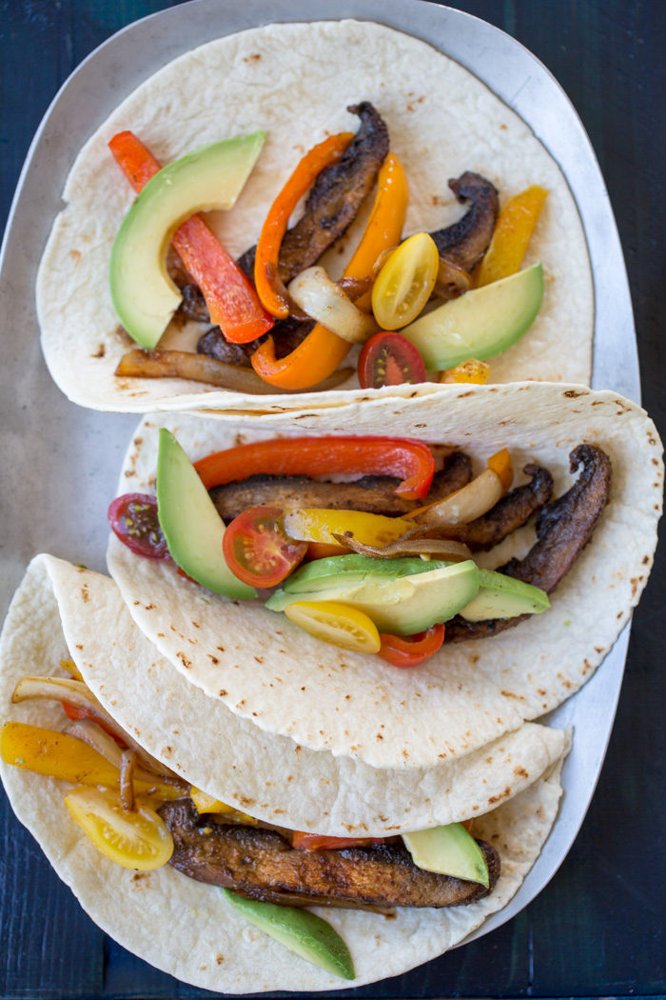

Fajitas

Description
These fajitas are something I like to make for a quick and yummy dinner.
Traditionally, fajitas are made with chicken or steak. However, I like to make mine vegetarian with sliced porobello mushrooms.
Ingredients
- 3 Large portobello mushrooms
- 2 bell peppers -- your choice on the color
- 1 whole white onion
- 1 jalapeno pepper
- 1 large avocado
- 1 lime
- 1 bundle of cilantro
- sour cream
- 4-8 8" flour tortillas
- bottle of vegetable oil
- salt to taste
- paprika
- trader joes elotes seasoning
- fajita sauce packet -- my favorite is the Fontera with chipotle and lime
Steps
Cooking
- Heat a large sauce pan over medium heat and add some vegitable oil when hot.
- Take your portobello musrooms and cut them into long even strips a little less than a half inch wide. Add them to the pan and stir occasionally. Make sure to get them covered in the vegetable oil. Depending on how fast the mushrooms soak up the oil, you may need to add more.
- Take your bell peppers cut them into long strips length wise. Once finished, add them to the pan with the mushrooms.
- Similarly, take your onion and cut it into long strips as well. Add to the pan.
- Lastly, take your Jalapeno and dice it up into 1/4" pieces. Add to the pan.
- Next, take your seasonings and add them to the pan. If you have any seasonings you like, add them as well. Options include: cumin, garlic powder, cayanne pepper, black pepper, etc..
- Let the vegetables cook and soften for about 8 minutes, never forgetting to stir every-so-often to enure an even cooking.
- While the veggies are cooking, take your avocado, cut it in half, and remove the pit. Carefully cut and peel away the skin, and slice each half into long strips legnthwise. Set these to the side and add some salt and lime on top of them.
- Once the veggies are done, add in the fajita sauce packet. Let the veggies simmer and soak in the sauce for about 6 minutes.
- While the veggies and sauce are simmering, heat up your tortillas. I like to do this in a cast iron skillet, but this can also be done over an open flame on a gas stovetop (be careful to not burn yourself!), or in the microwave on a plate with a paper towel on both sides of the tortillas.
Assembly
- Take your heated tortilla and add a dollop of sour cream to the center. Spread it around a little bit, but be sure to leave about two inches of space before the edge of the tortilla.
- Next, add your fajita veggies to the tortilla. You can add as much as you want, but the more you add, the more messy it will be.
- Top your veggies with some sliced avocado. Three to four strips usually does the trick.
- Rinse your cliantro and either chop it up on a cutting board or tear it into small pieces by hand. Sprinkle as much cliantro atop your creation as desired.
- That's it! Admire what you accomplished and eat your meal :)